فصل چهارم — پیشپردازش داده، نمونهگیری و کاهش بُعد#
درس دادهکاوی ـ کارشناسی ارشد مهندسی کامپیوتر
پرسش محوری: وقتی داده را برای کشف الگو آماده میکنیم، دقیقاً چه چیزی حفظ میشود، چه چیزی از دست میرود و چگونه میفهمیم الگوی کشفشده حاصل دستکاری بازنمایی نیست؟
فایلهای آموزشی: جزوهٔ PDF فصل چهارم · سورس XeLaTeX و تصاویر در ZIP · کد بازتولیدپذیر Python · Notebook · دادهٔ ساختگی. همهٔ فایلهای لازم برای آزمایشها در بستهٔ فصل قرار دارند.
اهداف یادگیری و مسئلهٔ آموزشی#
انتظار میرود دانشجو پس از این فصل بتواند: (۱) تفاوت کاهش تعداد مشاهدهها، کاهش تعداد ویژگیها و تغییر مقیاس یا بازنمایی را توضیح دهد؛ (۲) واحد مشاهده و سطح تجمیع را بدون از دستدادن پدیدهٔ مورد پرسش تعیین کند؛ (۳) نمونهگیری تصادفی، طبقهای، خوشهای و مخزنی را مقایسه کند؛ (۴) اثر نمونهگیری بر الگوهای نادر و برآوردهای جامعه را حساب کند؛ (۵) نرمالسازی، استانداردسازی و روشهای مقاوم را با توجه به هندسهٔ فصل سوم انتخاب کند؛ (۶) گسستهسازی و تبدیل متغیر اسمی را بدون ایجاد ترتیب ساختگی پیادهسازی کند؛ (۷) انتخاب ویژگی را از استخراج ویژگی و فرافکنی متمایز کند؛ (۸) PCA را از ماتریس کوواریانس تا مقدار ویژه، سهم واریانس و بازسازی مرحلهبهمرحله بفهمد؛ (۹) نقش SVD و فرافکنی تصادفی را در کاهش بُعد بشناسد؛ و (۱۰) از طریق یک ارزیابی بدون نشت اطلاعات، مناسببودن خروجی پیشپردازش را برای مسئلهٔ دادهکاوی بررسی کند.

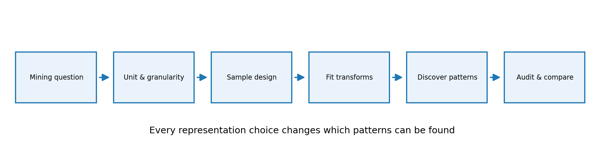
Fig. 41 شکل ۴ـ۱. مسیر استدلالی فصل: از سؤال و واحد مشاهده تا انتخاب نمونه، تبدیل، کشف الگو و ممیزی نتیجه. هر جعبه تصمیمی است که میتواند نتیجه را تغییر دهد.#
جایگاه فصل در دو مرجع اصلی و مرزبندی با فصلهای قبل#
در کتاب Han, Pei & Tong، ویرایش چهارم، فصل ۲، بخشهای ۲٫۴ تا ۲٫۶ (صفحات چاپی ۵۵ تا ۷۹) به کیفیت و یکپارچهسازی، تبدیل داده، نرمالسازی، گسستهسازی، فشردهسازی، نمونهگیری، PCA، انتخاب زیرمجموعهٔ ویژگیها و کاهش بُعد غیرخطی میپردازد. در کتاب Tan, Steinbach, Karpatne & Kumar، ویرایش دوم، بخش ۲٫۳ (صفحات چاپی ۵۰ تا ۷۱) موضوع را با تجمیع، نمونهگیری، کاهش بُعد، انتخاب و ساخت ویژگی، دودوییسازی و تبدیل متغیر دنبال میکند. شمارههای صفحه، صفحهٔ چاپشدهٔ کتاب هستند، نه شمارهٔ صفحهٔ فایل PDF.
در فصل دوم، کیفیت داده و انواع ویژگی بررسی شد؛ در فصل سوم، نشان دادیم که یک تغییر مقیاس میتواند همسایهٔ نزدیک را عوض کند. پس در این فصل مباحثِ کیفیتسنجی را دوباره از ابتدا تدریس نمیکنیم؛ آنها را به تصمیمهای عملیاتیِ پیشپردازش پیوند میدهیم. محور Tan، «متناسبسازی بازنمایی با هدف تحلیل» و محور Han، «خانوادهٔ تبدیلها و فشردهسازی و کاهش داده» است. مثالها و شکلهای این جزوه تازه و آموزشیاند و بازنشر شکل کتابها نیستند. بحثهای تکمیلیِ نشت اطلاعات، همسایگی پس از فرافکنی، دادهٔ آزمایش ساختگی و پروتکل ممیزی بهعنوان بسط آموزشی مستقل ارائه میشوند.
۴ـ۱. مسئلهٔ آغازین: چرا گزارش خلاصهشده، یک اتفاق مهم را پنهان کرد؟#
یک سامانهٔ خردهفروشی را تصور کنید که روزانه هزاران رکورد خرید ثبت میکند. مدیر میخواهد «رفتار غیرعادی خرید» و «اقلامی که با هم خریده میشوند» را بررسی کند. تیم فنی برای سرعت، سفارشها را ماهانه جمع میزند، یکدهم رکوردها را تصادفی نگه میدارد، همهٔ ستونها را به عدد تبدیل میکند و در نهایت داده را به دو مؤلفه کاهش میدهد. حالا الگوریتم سریع است؛ اما آیا هنوز همان سؤال اولیه را پاسخ میدهد؟
برای شروع، تنها چهار روز و شش تراکنش ساختگی را ببینید:
شناسه |
روز |
شهر |
مبلغ (واحد ساختگی) |
قلم کالا |
برچسب آموزشیِ رخداد نادر |
|---|---|---|---|---|---|
A1 |
۱ |
A |
۲۰ |
bread |
۰ |
A2 |
۱ |
A |
۳۰ |
milk |
۰ |
B1 |
۲ |
A |
۲۵ |
bread |
۰ |
B2 |
۲ |
A |
۲۸ |
milk |
۰ |
C1 |
۳ |
B |
۲۶ |
bread |
۰ |
D1 |
۴ |
B |
۳۰۰ |
camera |
۱ |
اگر سؤال «جمع مبلغ در هر روز» باشد، خروجی چهار عدد ۵۰، ۵۳، ۲۶، ۳۰۰ است. اما اگر سؤال «چه قلمی در تراکنش D1 رخ داده؟» باشد، با تبدیل به مجموع روزانه اطلاعات قلم کالا و شناسهٔ خرید از بین رفتهاند. میانگین مبلغ این شش تراکنش برابر ۷۱٫۵ است؛ این عدد نه تعداد رخداد نادر را مشخص میکند و نه ساختار همخریدی را. بنابراین کاهش حجم داده بهخودیخود پیشرفت نیست؛ باید معلوم کنیم برای کدام پرسش، کدام اطلاعات کافی است.
قرارداد مثال پیوسته. در پیوست، یک مجموعهدادهٔ کاملاً ساختگی با ۳۲۰ تراکنش، سه شهر، چهار گروه کالا، تعداد اقلام، تعداد مراجعه، درصد تخفیف، مبلغ و یک نشانگر rare_event داریم. این نشانگر تنها برای آزمایشِ توان حفظ رخداد نادر به کار میرود، نه بهعنوان ویژگی ورودی الگوریتمِ بدونناظر. هیچ ادعایی دربارهٔ فروشگاه واقعی یا کشف تقلب واقعی نداریم.

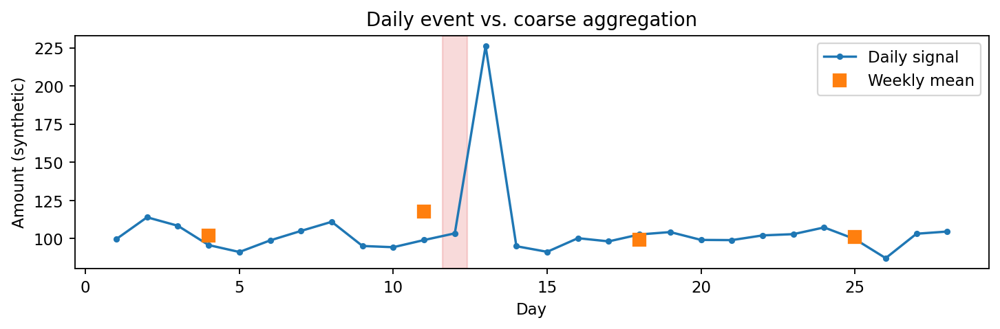
Fig. 42 شکل ۴ـ۲. یک جهش کوتاه در دادهٔ روزانه، پس از تجمیع هفتگی کمرنگ میشود؛ این مثال ساختگی نشان میدهد که «هموارترشدن» همیشه به معنی «بهترشدن» نیست.#
۴ـ۲. سه عملیات متفاوت که اغلب به اشتباه یکی گرفته میشوند#
داده را بهصورت ماتریس \(X\in\mathbb{R}^{n\times p}\) با \(n\) مشاهده و \(p\) ویژگی عددی در نظر بگیرید. در انتخاب مشاهده، برخی سطرها را برمیداریم و تعداد مشاهدهها از \(n\) به \(m\) کاهش مییابد. در انتخاب ویژگی، برخی ستونهای اصلی را نگه میداریم و تعداد ویژگیها از \(p\) به \(k\) میرسد. در استخراج ویژگی، ستونهای جدیدی مانند مؤلفههای PCA یا نسبت «مبلغ به تعداد اقلام» میسازیم؛ ستونهای جدید لزوماً یکی از ستونهای اصلی نیستند.
از نگاه ریاضی، با ماتریسهای انتخاب سطر \(S\) و انتخاب ستون \(C\) میتوان نوشت:
در این روابط، \(S\) از سطرها نمونه میگیرد؛ \(C\) زیرمجموعهای از ستونهای اصلی است؛ و \(W\) ماتریسی است که چند ویژگی را با هم ترکیب میکند. این تمایز در ارزیابی مهم است: بازسازی از \(XC\) در حالت کلی ممکن نیست، چون ستونهای حذفشده موجود نیستند؛ در فرافکنی نیز بازسازی غالباً تقریبی است، مگر آنکه همهٔ مؤلفههای لازم را نگه داریم.
عمل |
چه چیزی تغییر میکند؟ |
سود اصلی |
خطر اصلی |
|---|---|---|---|
تجمیع |
تعریف مشاهده و دقت زمانی/مکانی |
مقیاس و پایداری |
محوشدن الگوی محلی |
نمونهگیری |
تعداد سطرها |
سرعت |
حذف گروه نادر و سوگیری |
تغییر مقیاس |
واحد و هندسهٔ مختصات |
مقایسهٔ عادلانهٔ ویژگیها |
تقویت نویز، نشت اطلاعات |
گسستهسازی |
مقدار پیوسته به بازه/کد |
تفسیرپذیری و الگوی انجمنی |
حذف ترتیب دقیق |
انتخاب ویژگی |
تعداد ستونهای اصلی |
سادگی و قابلیت تفسیر |
از دستدادن اطلاعات مکمل |
فرافکنی/PCA |
ساخت مختصات جدید |
کاهش افزونگی |
از دستدادن معنا یا رخداد نادر |
پرسش تشخیصی: اگر میخواهیم الگوهای همخریدی را استخراج کنیم، آیا ماهانهکردن مبلغ خرید همان انتخاب ۲۰٪ سفارشهاست؟ خیر. اولی نوع شیء و معنای رکورد را تغییر میدهد، دومی تعداد همان شیء را.
۴ـ۳. تجمیع و دانهبندی: پیش از میانگینگرفتن واحد مشاهده را بپرسیم#
دانهبندی (Granularity) تعیین میکند «یک سطر» نمایندهٔ چیست: یک قلم در یک سفارش، کل سفارش، خریدهای یک مشتری در یک هفته یا کل فروشگاه در یک ماه. قاعدهٔ جمعزدن برای هر نوع متغیر یکسان نیست: «تعداد اقلام» و «مبلغ» معمولاً جمعپذیرند؛ «قیمت متوسط» باید با وزن مناسب بازسازی شود؛ «شهر» قابل جمع نیست؛ و «آیا این سفارش شامل کالای X بود؟» با متوسطگیری میتواند معنای دیگری پیدا کند.
محاسبهٔ دستی. فروشگاه در یک روز دو تراکنش ثبت کرده است: سه قلم با مبلغ ۶۰ و یک قلم با مبلغ ۲۰. میانگین «مبلغ هر تراکنش» برابر \((60+20)/2=40\) است. اما میانگین «مبلغ هر قلم» برابر \((60+20)/(3+1)=20\) است. اگر در پایگاه داده تنها دو میانگینِ سطح فروشگاه نگه داشته شود و تعدادها گم شوند، برگرداندن میانگین درست ممکن نیست.
اگر هر گروه \(g\) دارای تعداد \(n_g\) و میانگین \(\bar{x}_g\) باشد، میانگین کل با وزن تعداد محاسبه میشود:
در مثال ما، اگر گروه اول شامل سه قلم با میانگین ۲۰ و گروه دوم یک قلم با میانگین ۲۰ باشد، میانگین وزنی همچنان ۲۰ است؛ اما میانگین بیوزن «میانگین خرید هر سفارش» با تعریف دیگری محاسبه میشود. بنابراین حتی یک فرمول ساده باید با تعریف مخرج همراه باشد.
برای کشف رخداد غیرعادی، در کنار جمع ماهانه معمولاً کمیتهایی مانند max, count, std و صدکهای مهم را نگه میداریم؛ گاهی نیز باید رکورد خام را برای تحلیل تکمیلی حفظ کنیم. پس پیشنهاد عملی این است: ابتدا سطح تحلیل را مشخص کنید؛ سپس آمار کافی برای پرسش را انتخاب کنید؛ و سرانجام هزینهٔ از دستدادن جزئیات را بسنجید.
۴ـ۴. نمونهگیری: از یک میلیارد رکورد چه چیزی را باید حفظ کنیم؟#
در دادهکاوی، یکی از دلایل نمونهگیری این است که الگوریتم روی کل داده از نظر حافظه یا زمان مقرونبهصرفه نیست. اما معیار خوببودن نمونه، صرفاً کوچکبودن نیست؛ باید از نظر ویژگی مورد مطالعه نمایندهٔ جامعه باشد. به بیان Tan، نمونهای که برای برآورد میانگین مناسب است ممکن است برای کشف خوشهٔ بسیار کوچک مناسب نباشد. انتخاب طرح نمونه به هدف وابسته است.
در نمونهگیری تصادفی سادهٔ بدون جایگذاری (SRSWOR)، هر زیرمجموعهٔ \(m\)تایی از جامعهٔ \(N\)تایی، احتمال یکسان دارد و هیچ رکوردی دوبار برداشته نمیشود. در حالت با جایگذاری (SRSWR)، یک رکورد میتواند چند بار انتخاب شود. برای \(m\ll N\) تفاوت این دو کوچک است، اما برای نمونهٔ بزرگ ممکن است اثر تکرار مهم شود.
اگر جامعهٔ ۱۰۰ سفارش داشته باشد که فقط ۵ تای آن «نادر» باشند، احتمال اینکه نمونهٔ بدون جایگذاریِ ۱۰تایی هیچ رخداد نادری نبیند برابر است با:
یعنی حدود ۵۸٪ نمونههای تصادفیِ دهتایی، این گروه کوچک را اصلاً نشان نمیدهند. پس نبودن الگو در نمونه، دلیل نبودن آن در جامعه نیست. افزایش اندازهٔ نمونه احتمال حذف کامل را پایین میآورد ولی با سرعتی وابسته به فراوانی واقعی گروه و طرح نمونه.

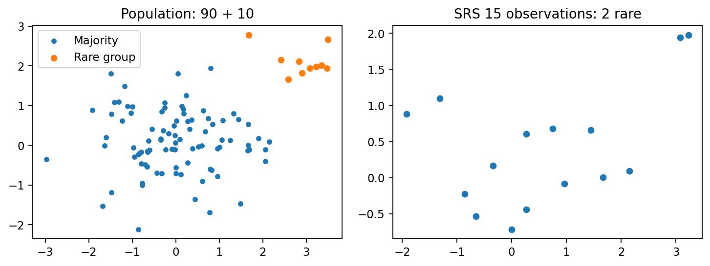
Fig. 43 شکل ۴ـ۳. جمعیت دوگروهی و یک نمونهٔ تصادفی سادهٔ کوچک. در سمت نمونه، ممکن است نمایندگی گروه کوچک بهطور اتفاقی کم یا صفر باشد.#

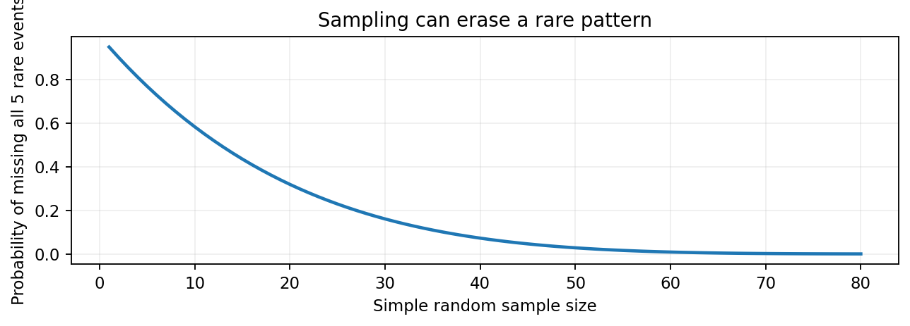
Fig. 44 شکل ۴ـ۴. احتمالِ از دستدادن هر پنج رخداد نادر در جامعهای صدتایی با افزایش اندازهٔ نمونه کاهش مییابد؛ منحنی از رابطهٔ فوق محاسبه شده است.#
از نظر محاسباتی، نمونه به چه اندازه باشد؟#
پاسخ «همیشه ده درصد داده» قابل دفاع نیست. اندازهٔ مناسب به فراوانی الگو، میزان خطای قابل پذیرش، سطح اطمینان، ناهمگنی داده و هزینهٔ محاسبه وابسته است. برای برآورد میانگین یک متغیر با واریانس تقریبی \(\sigma^2\)، تحت نمونهگیری مستقل و فرضهای متعارف، خطای معیار حدود \(\sigma/\sqrt{m}\) است. اما این رابطه، تضمین نمیکند که نمونه برای یک خوشهٔ نادر یا وابستگی شرطی نیز مناسب باشد.
یک روش مناسب در پروژه: اندازههای \(m,2m,4m\) را مقایسه کنیم و ببینیم فراوانی الگوهای پرتکرار، ثبات همسایهها یا گروههای کوچک چقدر تغییر میکند. اگر نتیجه ناپایدار است، هنوز کاهش داده را نمیتوان با اطمینان توجیه کرد.
۴ـ۵. نمونهگیری طبقهای و خوشهای: چرا وزنها اهمیت دارند؟#
در نمونهگیری طبقهای (Stratified Sampling) جامعه را به گروههای تعریفشده و جدا از هم تقسیم میکنیم و از هر گروه نمونه برمیداریم. این کار برای اطمینان از حضور شهر کوچک، فصل کمفروش یا گروه کمتعداد مفید است. اما اگر برای حفظ گروه نادر آن را بیشنمونهگیری کنیم، سهم آن در نمونه دیگر سهم واقعی جامعه نیست.
مثال دستی مهم. ۸۰٪ مشتریان در گروه A میانگین خرید ۱۰ دارند و ۲۰٪ در گروه B میانگین خرید ۵۰. میانگین واقعی جامعه:
اگر از هر گروه ۲۰ نفر بگیریم و میانگین سادهٔ ۴۰ مشاهده را محاسبه کنیم، انتظار داریم \((10+50)/2=30\) شود؛ این برآورد میانگین جامعه نیست. با وزن متناسب با اندازهٔ واقعی گروهها، برآورد طبقهای چنین است:
در نمونهگیری خوشهای (Cluster Sampling) بهجای انتخاب رکوردها از کل جامعه، واحدهایی مانند فروشگاه، مدرسه یا صفحهٔ ذخیرهسازی انتخاب میشوند و دادههای داخل آنها جمعآوری میشوند. اجرا میتواند کمهزینهتر باشد، ولی نمونهٔ واقعی از نظر همبستگی درون خوشه متفاوت است. ده سفارش از یک مشتری را نباید لزوماً ده مشاهدهٔ مستقل دربارهٔ جمعیت مشتریان بدانیم.
تفاوت حیاتی بین طبقه و خوشه#
هدف متداولِ نمونهگیری طبقهای، حفظ یا بهبود پوششِ گروههای معنادار در سراسر جامعه است؛ هدف متداولِ نمونهگیری خوشهای، صرفهجویی با انتخاب چند واحد گروهی است. اگر مشتریان داخل فروشگاه از نظر رفتار شبیهاند، نمونهگیری چند فروشگاه میتواند واریانس تخمین را بیشتر کند. در گزارش نهایی طرح نمونه، باید جامعه، واحد نمونه، روش، احتمال انتخاب، وزن و محدودیت تعمیم نوشته شود.
۴ـ۶. دادهٔ جریانی و نمونهگیری مخزنی (Reservoir Sampling)#
گاهی تعداد تراکنشهای نهایی از قبل معلوم نیست و داده بهصورت جریان وارد میشود. اگر فقط ظرفیت نگهداری \(k\) رکورد داشته باشیم، نمونهگیری مخزنی نمونهای یکنواخت از همهٔ رکوردهای دیدهشده تولید میکند، بدون ذخیرهٔ کل جریان.
شبهکد برای جریان با شمارهگذاری یکمبنایی:
reservoir <- first k observations
for i = k+1, k+2, ...:
j <- random integer from 1 to i
if j <= k:
reservoir[j] <- observation_i
چرا این روش عادلانه است؟ رکورد جدید در لحظهٔ \(i\) با احتمال \(k/i\) وارد مخزن میشود. رکورد قدیمی که پیش از آن در مخزن بود، با احتمال \((i-1)/i\) باقی میماند. با استقرا، پس از دیدن \(n\) رکورد، احتمال حضور هر رکورد همان \(k/n\) است. برای مثال با مخزن دهتایی، پس از رسیدن جریان به ۱۰۰ رکورد، هر رکورد دقیقاً احتمال \(0.1\) برای حضور در مخزن دارد.

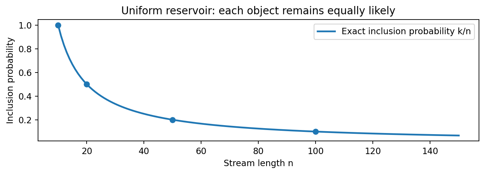
Fig. 45 شکل ۴ـ۵. با افزایش طول جریان، احتمال حضور هر رکورد در مخزن ثابتِ دهتایی کاهش مییابد، اما برای همهٔ رکوردهای دیدهشده برابر باقی میماند.#
محدودیت: یکنواختیِ نمونه بهمعنی مناسببودن برای تغییر مفهوم در زمان (Concept Drift) نیست. اگر هدف تحلیل «ده دقیقهٔ اخیر» باشد، یک مخزن یکنواخت از کل تاریخ لزوماً مناسب نیست و پنجرهٔ زمانی یا نمونهگیری وزندار لازم میشود. این بحث، بسط کاربردی فراتر از ارائهٔ پایهٔ دو مرجع است.
۴ـ۷. پاکسازی و یکپارچهسازی در حدی که بر استخراج الگو اثر میگذارند#
فصل دوم دربارهٔ کیفیت داده، مقادیر گمشده، تکرار رکورد و نامگذاری ویژگیها بود. اینجا فقط پیامد آن تصمیمها را در پیشپردازش برای کشف میبینیم. پاکسازی باید تعریف مشخصی داشته باشد: آیا «صفر» واقعاً نبود خرید است؟ آیا -999 کد گمشده است؟ آیا حذف یک تکرار برحسب «شناسهٔ سفارش» انجام شده یا «شناسهٔ قلم»؟ پاسخ هر سؤال ممکن است تعداد تراکنشها، فراوانی یک قلم و در نهایت پشتیبانی قواعد انجمنی را عوض کند.
مثال دستی. در سبدهای \(\{A,B\}\)، \(\{A\}\) و \(\{B\}\)، فراوانی قلم \(A\) برابر ۲ از ۳ است. اگر سبد اول بهاشتباه دوبار ثبت شده باشد، نسبت آن به ۳ از ۴ تغییر میکند؛ در نتیجه تصمیم «قلم A پرتکرار است یا نه؟» ممکن است با آستانهٔ مشخص تغییر کند. پس حذف تکراری که در تحلیل مبادلات بهجا است، نباید به حذف خرید واقعیِ دوباره از سوی یک مشتری تبدیل شود.
در یکپارچهسازی نیز کلیدهای پیوند مهماند: پیوند سفارش به جدول اقلام از نوع یکبهچند است؛ اگر پس از join تعداد سطرها زیاد شد، این افزایش لزوماً خطا نیست، اما محاسبهٔ «مبلغ کل سفارش» روی سطرهای تکرارشده میتواند اشتباه باشد. برای کنترل باید شمارش قبل/بعد، یکتایی کلید و قرارداد سطح رکورد ثبت شود. این موارد نمونههایی از مباحث Han ۲٫۴ هستند که در پروژهٔ کشف الگو حیاتیاند.
۴ـ۸. تبدیل مقیاس: چرا ویژگی بزرگتر لزوماً مهمتر نیست؟#
فرض کنید دو ویژگی عددیِ «مبلغ خرید» و «تعداد مراجعه» داریم. اگر مبلغ بین ۱۰ تا ۱۰۰۰ و تعداد مراجعه بین ۱ تا ۱۰ باشد، در فاصلهٔ Euclidean خام، اختلاف مبلغ معمولاً غالب میشود. همانگونه که در فصل سوم دیدیم، تغییر واحد متر به سانتیمتر هم میتواند همسایهٔ نزدیک را تغییر دهد. بنابراین مقیاسبندی بخشی از انتخاب هندسه است، نه یک عملیات زیباییشناختی روی ستونها.
Min–Max#
برای دادهٔ آموزش با کمینه \(a\) و بیشینه \(b\):
مثال: برای مقادیر ۱۰، ۲۰، ۳۰، سه خروجی ۰، ۰٫۵ و ۱ حاصل میشود. اگر دادهٔ آزمون مقدار ۴۰ داشته باشد، با همان \(a=10,b=30\) مقدار ۱٫۵ بهدست میآید؛ لزومی ندارد دادهٔ آزمون در بازهٔ صفر تا یک بماند و نباید برای آن کمینه و بیشینه را دوباره برازش کرد.
استانداردسازی Z-score#
اگر دادهٔ آموزش ۱۰، ۲۰، ۳۰ باشد، میانگین ۲۰ و انحراف معیار جامعهای \(\sqrt{200/3}\approx8.165\) است؛ پس مقدار ۳۰ حدود \(1.225\) انحراف معیار بالاتر از میانگین قرار میگیرد. اگر \(\sigma=0\) باشد، ویژگی ثابت است و باید قرارداد روشنی برای آن داشت (مثلاً مقیاس ۱ و سپس حذف ستون ثابت).
مقیاسبندی مقاوم#
برای دادهٔ دارای جهش شدید، میتوان از میانه و دامنهٔ میانچارکی استفاده کرد:
هر سه تبدیل خطی یا وابسته به آمارهٔ سادهاند، اما در برابر برونزدگی حساسیت یکسان ندارند. Min–Max به شدت به بیشینهٔ دورافتاده وابسته است؛ Z-score نیز میانگین و واریانس را از همان داده برآورد میکند؛ روش مقاوم میانه و IQR را مبنا قرار میدهد. بااینحال هیچیک «همیشه بهترین» نیستند: روش مقاوم ممکن است در ویژگیای با IQR صفر نیز به قرارداد ویژه نیاز داشته باشد.

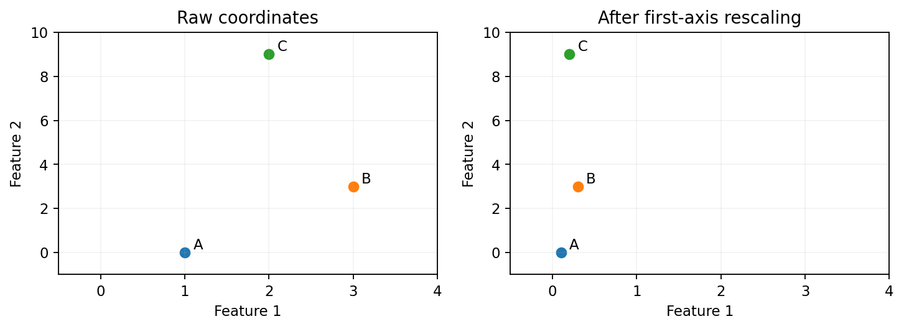
Fig. 46 شکل ۴ـ۶. صرف تغییر واحد محور اول، هندسهٔ فاصله را تغییر میدهد؛ یک تصمیم از پیشپردازش میتواند پاسخ سؤال «چه کسی نزدیکتر است؟» را دگرگون کند.#

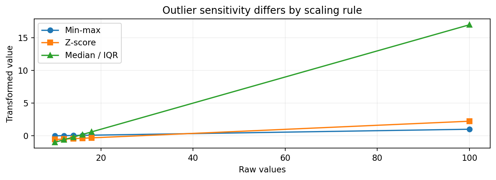
Fig. 47 شکل ۴ـ۷. سه تبدیل مقیاس برای دادهٔ دارای مقدار دورافتاده. هدف نشاندادن تفاوتِ رفتار در برابر جهش است، نه برتری همیشگی یک روش.#
تبدیل لگاریتمی و نرمالسازی برداری#
وقتی ویژگی نامنفی با دنبالهٔ راست بلند داریم، گاهی \(\log(1+x)\) توزیع را فشردهتر میکند. اما اگر صفر یا مقدار منفی معنی ویژه داشته باشد باید قرارداد تبدیل مشخص شود؛ log1p برای مقادیر بزرگتر از \(-1\) تعریف حقیقی دارد و بهخودیخود مسئلهٔ کدهای گمشده را حل نمیکند. برای شباهت کسینوسی، گاهی هر رکورد را با نرم \(L_2\) خود نرمال میکنیم:
این عمل با استانداردسازی یک ستون متفاوت است: اولی طول بردار رکورد را یک میکند، دومی مرکز و مقیاسِ توزیع یک ویژگی را تغییر میدهد. انتخاب میان آنها باید از نوع شباهت و هدف کشف پیروی کند.
۴ـ۹. نشت اطلاعات: مرز آموزش، اعتبارسنجی و آزمون را قبل از تبدیل مشخص کنید#
اگر کمینه، میانگین، میانه، مؤلفههای PCA یا انتخاب ویژگی را روی تمام داده محاسبه کنیم و بعد به آموزش و آزمون تقسیم کنیم، بخش آزمون بر ساختِ بازنماییِ آموزش اثر گذاشته است. این نوع نشت اطلاعات (Data Leakage) میتواند برآورد عملکرد را مخدوش کند. در مسائل زمانی، همچنین نباید از آینده برای پردازش رکوردهای گذشته اطلاعات گرفت.
قرارداد عملی: ابتدا داده را با توجه به واحد استقلال و زمان/گروه به بخشهای مناسب تقسیم کنید. سپس مراحل وابسته به داده (مانند Imputer، Scaler، PCA یا Feature Selector) را فقط روی بخش آموزش fit کنید و روی اعتبارسنجی/آزمون صرفاً transform اجرا کنید. انتخاب روش و فراپارامتر نیز فقط با اعتبارسنجی انجام میشود؛ مجموعهٔ آزمون برای گزارش نهایی کنار میماند.

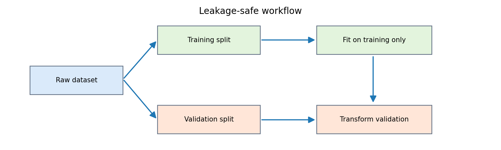
Fig. 48 شکل ۴ـ۸. جریانِ ایمنِ برازش: ابتدا تقسیم؛ سپس برازشِ تبدیل روی آموزش؛ در انتها فقط تبدیلِ بخشهای دیگر. فلش برگشتِ دادهٔ آزمون به برازش مجاز نیست.#
مثال فکری. فرض کنید آزمون شامل مبلغ خریدی بسیار بزرگ است و از قبل روی همهٔ رکوردها Min–Max اجرا شده است. کمینه/بیشینهٔ دادهٔ آزمون، مقیاسِ رکوردهای آموزش را تعیین میکند و اگر بعداً آزمون با مقدار دیگری از راه برسد، نتیجهٔ تحلیل آموزش تغییر میکند. چنین خط لولهای برای استقرار آینده هم سازگار نیست. نشت اطلاعات همیشه باعث بهترشدن عدد ارزیابی نمیشود؛ مسئله این است که ارزیابی دیگر واقعاً مستقل نیست.
برای دادهکاوی بدونناظر نیز این مسئله مهم است: اگر قرار است «پایداری خوشهها روی دادهٔ جدید» سنجیده شود، انتخاب بُعد، میانگین و مقیاس را نباید با مشاهدهٔ همان دادهٔ جدید انجام داد. اگر هدف صرفاً توصیفِ کل دادهٔ موجود است و هیچ ادعای تعمیم خارج از نمونه نداریم، میتوان برازش روی کل داده را انتخاب کرد، اما باید نوع ادعای نتیجه را صریح بیان کنیم.
۴ـ۱۰. گسستهسازی: چگونه مقدار پیوسته را به «اقلام» قابل کشف تبدیل کنیم؟#
در بسیاری از روشهای استخراج قواعد انجمنی، ورودی، تراکنشهای شامل اقلام دودویی است. مبلغ خریدِ پیوسته را میتوان به بازههایی مانند low، medium و high تبدیل کرد؛ آنگاه اقلامی مثل spend_high وارد سبدها میشوند. اما هر مرز بازه، اطلاعاتی را حذف میکند. اختلاف ۱۰۰ و ۱۰۱ ممکن است در دو بازه قرار بگیرد، در حالی که اختلاف ۱۰۱ و ۱۹۰ ممکن است در همان بازه بیفتد.
همعرض (Equal-width)#
برای حد پایین \(a\)، حد بالا \(b\) و \(K\) بازه، عرض هر بازه:
مثال: در مقادیر \(1,2,3,4,20,21\) و \(K=3\)، بازهها تقریباً \([1,7.67)\)، \([7.67,14.33)\) و \([14.33,21]\) خواهند بود؛ ممکن است بازهٔ میانی خالی باشد. قرارداد بسته/بازبودن مرزها و برخورد با مقدار بیرون دامنهٔ آموزش باید روشن شود.
همفراوانی (Equal-frequency/Quantile)#
مرزها را از صدکهای دادهٔ آموزش به دست میآوریم تا هر بازه تقریباً شمار برابر داشته باشد. روی همان شش مقدار، میتوان سه گروه مرتب \(\{1,2\}\)، \(\{3,4\}\) و \(\{20,21\}\) ساخت. اما با مقدارهای تکراری بسیار ممکن است مرزهای صدکی یکی شوند و تعداد بازههای متمایز کمتر از \(K\) شود. این موضوع نقص برنامه نیست، ویژگی داده است و باید مدیریت شود.

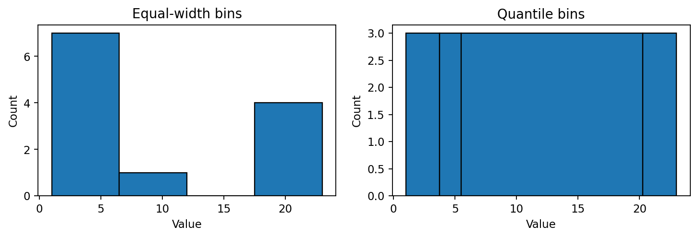
Fig. 49 شکل ۴ـ۹. مقایسهٔ تقسیم همعرض و صدکی روی همان دادهٔ ساختگی. شکل توزیع تعیین میکند کدام بازنمایی گروههای پرتراکم را بهتر تفکیک میکند.#
روشهای آستانهگذاری دانشمحور نیز مفیدند؛ مثلاً «خرید بیش از سقف قراردادی» برای فرایند عملیاتی معنی دارد. ولی تعیین آستانه از روی کل داده یا از روی برچسبهای آزمون میتواند نشت اطلاعات ایجاد کند. گسستهسازی نظارتشده باید درون ارزیابیِ صحیح و فقط با دادهٔ آموزش انجام شود.
۴ـ۱۱. تبدیل متغیر اسمی و دودوییسازی: به کد عددی معنای هندسی ندهیم#
اگر چهار شهر را با ۰، ۱، ۲ و ۳ کدگذاری کنیم، فاصلهٔ عددی بین شهر اول و چهارم سه برابر فاصلهٔ شهر اول و دوم میشود؛ در حالی که شهر یک ویژگی اسمی است و چنین ترتیبی ممکن است کاملاً بیمعنا باشد. راه عمومی برای بسیاری از مدلهای عددی One-hot است: چهار ستون city_A تا city_D ساخته میشود و هر رکورد تنها در یکی از آنها یک دارد.
برای چهار رده، نمایش بهصورت زیر است:
در این نمایش فاصلهٔ Euclidean هر دو شهر متفاوت \(\sqrt{2}\) است؛ هیچ ترتیب مصنوعی به آنها تحمیل نمیشود. بااینحال One-hot در ویژگی اسمیِ بسیار پُررده میتواند بعد و تنکی را بهشدت بالا ببرد. کد دودوییِ فشرده با \(\lceil\log_2K\rceil\) بیت فضای کمتری میگیرد، اما ممکن است رابطهٔ نزدیکی مصنوعی بین ردهها ایجاد کند؛ در قواعد انجمنی، تفسیر «وجود یک قلم» معمولاً مهمتر از صرف فشردهسازی بیتهاست.

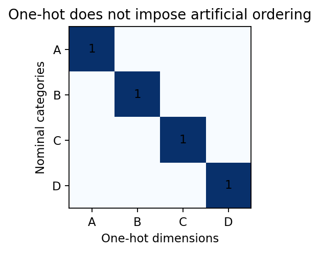
Fig. 50 شکل ۴ـ۱۰. نمایش One-hot برای چهار گروه اسمی: هر ستون یک گزارهٔ مستقل از حضور رده است، نه درجهٔ بزرگی آن رده.#
مسئلهٔ ردهٔ ناشناخته. اگر شهری در دادهٔ جدید باشد که در آموزش دیده نشده است، خط لوله باید رفتار تعریفشده داشته باشد: خطا، ردهٔ other، یا بردار همهصفر. بردار همهصفر نیز باید آگاهانه تفسیر شود؛ نباید بیسروصدا آن را «شهر A» یا «عدم خرید» تلقی کرد.
۴ـ۱۲. انتخاب ویژگی: تفسیرپذیری را در برابر اطلاعات ازدسترفته بسنجیم#
اگر \(p\) ویژگی داشته باشیم، انتخاب همهٔ زیرمجموعهها به \(2^p\) حالت منجر میشود. بنابراین در ابعاد متوسط نیز بررسی کامل همهٔ گزینهها اغلب عملی نیست. انتخاب ویژگی (Feature Subset Selection) ستونهای اصلی را حفظ میکند و ستونهایی را که افزونگی دارند یا به هدف کمک نمیکنند حذف میکند؛ اما «غیرمفیدبودن» همیشه با واریانس کم برابر نیست.
مثال دستی. سه ویژگی برای چهار مشاهده تعریف کنید:
\(F_2=2F_1\) و اطلاعات خطیِ جدیدی اضافه نمیکند. از سوی دیگر \(F_3\) واریانس کمی دارد، اما ممکن است دقیقاً رخداد نادری را کد کرده باشد؛ حذف آن فقط با معیار «واریانس کم» میتواند زیانآور باشد. نتیجه: انتخاب ویژگی را هم باید با هدف کشف و توان حفظ موارد نادر بسنجیم.
روشهای رایج عبارتاند از: Filter (ارزیابی ویژگی مستقل از الگوریتم نهایی، مانند همبستگی/وابستگی/آزمون آماری)، Wrapper (سنجش زیرمجموعهها با عملکرد الگوریتم مقصد) و Embedded (انتخاب بهعنوان بخشی از یادگیری). در کشف الگوی بدونناظر، ارزیابی باید متناسب با پایداری ساختار، همسایگی یا نیاز دامنه باشد؛ استفادهٔ خودسرانه از برچسبی که بعداً قرار است پیشبینی شود، هدف را عوض میکند.
سنجش سادهٔ افزونگی. برای دو ویژگی کاملاً همبسته \(F_1,F_2\)، همبستگی Pearson برابر ۱ است؛ حذف یکی از آنها در روش خطی ممکن است بیهزینه باشد، ولی در مسائل غیرخطی و در حضور فقدان داده، این نتیجه لزوماً برقرار نیست. در پروژهٔ واقعی، ردههای اسمی را با معیارهای مناسب خود و اقلام تنک را با معنای حضور/عدم حضور تحلیل کنید.

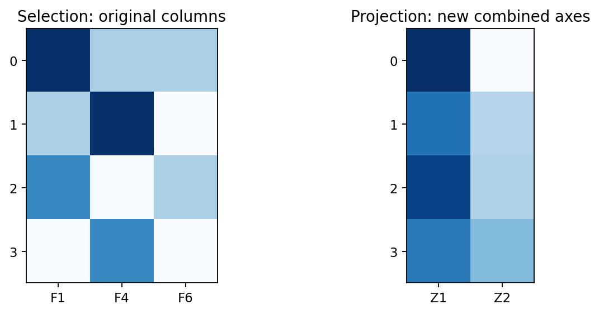
Fig. 51 شکل ۴ـ۱۱. مقایسهٔ انتخابِ ستونهای موجود با فرافکنی به مختصات تازه؛ در سمت دوم یک مؤلفه ممکن است ترکیبی از همهٔ ویژگیهای اولیه باشد.#
۴ـ۱۳. استخراج ویژگی: وقتی سؤال را با متغیر تازه بهتر میتوان دید#
ساخت ویژگی با انتخاب زیرمجموعه فرق دارد. گاهی نسبت یا اختلاف دو ستون معنای مسئله را بهتر آشکار میکند: برای دادهٔ خرید، spend_per_unit = spend / units شاخصی متفاوت از مبلغ کل است و در صورت مثبتبودن units قابل تعریف است. در یک سامانهٔ پایش، تغییر از سیگنال خام به دامنهٔ طیفی میتواند دورههای تکرارشونده را آشکار کند. این ایده در Tan ۲٫۳٫۵ با مثالهای تبدیل فضا و ویژگی مشتقشده مطرح است.
مثال دستی. دو سفارش با مبلغ ۱۰۰ و ۱۲۰ ممکن است به نظر نزدیک باشند؛ اما اگر تعداد قلم بهترتیب ۱۰ و ۲ باشد، مبلغ هر قلم ۱۰ و ۶۰ است. برای کشف الگوی «خریدِ کمتعداد اما گران»، ویژگی مشتقشده ممکن است اطلاعات دقیقتری از مبلغ کل ارائه دهد. در برابر، اگر تعداد قلم صفر یا نامعلوم باشد، نسبت تعریفنشده است و باید جداگانه مدیریت شود.
ساخت ویژگیهای زیاد بدون فرضیه میتواند خطر انتخاب فرصتطلبانه را بالا ببرد: اگر صدها نسبت و تبدیل بیهدف بسازیم و تنها نتیجهٔ ظاهراً جالب را گزارش کنیم، اعتبار کشفیات کاهش مییابد. بنابراین منطق ساخت ویژگی، تعداد آزمایشها و نحوهٔ ارزیابی مستقل باید ثبت شود.
۴ـ۱۴. کاهش بُعد: چرا فشردهسازی با انتخاب ویژگی یکسان نیست؟#
در دادهٔ \(n\times p\)، ممکن است بسیاری از ستونها ترکیب خطی یا تقریبی چند روند مشترک باشند؛ مثلاً مبلغ خرید، تعداد اقلام و امتیاز فعالیت با یک عامل نهفته مرتبط باشند. اگر بتوانیم رکوردها را با \(k\ll p\) مؤلفه نمایش دهیم، نگهداری و محاسبهٔ فاصله سادهتر میشود. در عوض، فرافکنی میتواند جزئیاتِ کمواریانس ولی مهم را حذف کند.
کاهش بُعد (Dimensionality Reduction) به معنای یافتن نگاشتی مانند \(f:\mathbb{R}^p\to\mathbb{R}^k\) است. در روش خطی، \(f(x)=W^\top(x-\mu)\)؛ در روش غیرخطی، \(f\) ممکن است ساختار پیچیدهتری داشته باشد. کیفیت کاهش بُعد باید با معیار مربوط به مسئله سنجیده شود: خطای بازسازی برای فشردهسازی؛ حفظ فاصله یا همسایگی برای خوشهبندی؛ یا حفظ الگوهای نادر برای کشف ناهنجاری.
۴ـ۱۵. تحلیل مؤلفههای اصلی (PCA) از محاسبهٔ دستی تا هندسه#
PCA جهتی را مییابد که دادهٔ مرکزشده روی آن بیشترین واریانس را دارد؛ سپس جهتهای متعامد بعدی را بهترتیب واریانس انتخاب میکند. اگر دادهٔ \(n\) رکورد و \(p\) ویژگی داشته باشد، میانگین هر ستون را از آن کم میکنیم و ماتریس کوواریانس را میسازیم:
قرارداد این جزوه، کوواریانس با مخرج \(n\) برای نشاندادن هندسهٔ مجموعهٔ محدود داده است؛ در بعضی کتابخانهها و برآورد آماری با مخرج \(n-1\) کار میشود. جهتهای PCA در این دو حالت یکساناند، اگر فقط ضریب مقیاس کوواریانس تغییر کند، اما مقدارهای ویژه با ضریب یکسان تغییر میکنند.
مثال دستی پنج نقطه#
پنج مشاهدهٔ دوبعدی را در نظر بگیرید:
میانگین هر ستون صفر است. با ضرب \(X^\top X/5\) داریم:
مقدارهای ویژه از معادلهٔ \(\det(\Sigma-\lambda I)=0\) بهدست میآیند:
بردار ویژهٔ یکهٔ اول را میتوان به شکل \(w_1=(2,1)^\top/\sqrt{5}\) انتخاب کرد؛ جهت دوم بر آن عمود است. وقتی نقطهٔ \((2,1)\) روی جهت اول فرافکنی شود:
اگر همان یک مؤلفه حفظ شود، نقطه از \(z_1w_1\) به \((2,1)\) بازسازی میشود. در این مثال همهٔ نقاط دقیقاً روی یک خطاند و خطای بازسازی با یک مؤلفه صفر است. در دادهٔ واقعی معمولاً چنین نیست؛ شکل بعدی نویز متعامد و خطا را نشان میدهد.

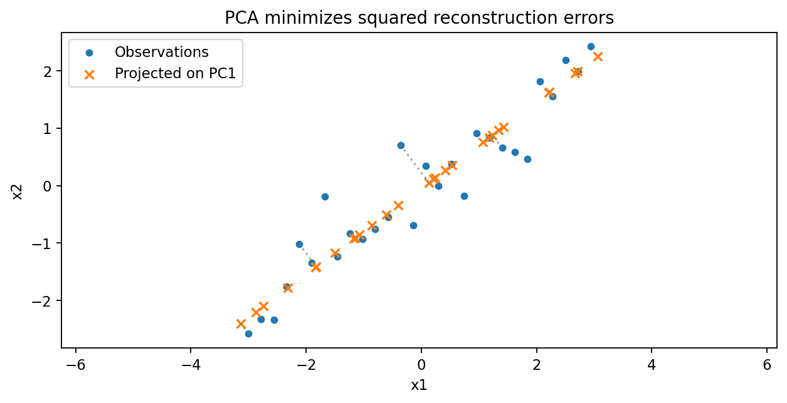
Fig. 52 شکل ۴ـ۱۲. PCA روی دادهٔ دوبعدیِ دارای نویز: محور اول در جهت پراکندگی غالب قرار میگیرد و فاصلهٔ نقطه تا تصویر آن، خطای بازسازی را میسازد.#
چرا بردار ویژه ظاهر میشود؟#
پرافکنی داده روی جهتِ یکهٔ \(w\) به بردار \(X_cw\) تبدیل میشود. واریانس آن برابر \(w^\top\Sigma w\) است؛ پس باید مسئلهٔ بهینهسازی را حل کنیم:
با ضریب لاگرانژ و مشتقگیری به \(\Sigma w=\lambda w\) میرسیم. برای بیشترین واریانس، بردار ویژهٔ متناظر با بزرگترین مقدار ویژه را انتخاب میکنیم. شرط متعامدبودنِ مؤلفههای بعدی از دوبارهشماری همان جهت جلوگیری میکند. PCA جهت هندسی داده را یاد میگیرد؛ این جهت الزاماً همان ویژگیِ دارای بیشترین اهمیت برای کشف گروه نادر نیست.
سهم واریانس و انتخاب تعداد مؤلفهها#
اگر \(\lambda_1\ge\cdots\ge\lambda_p\ge0\)، سهم واریانس مؤلفهٔ \(j\) چنین تعریف میشود:
برای مقدارهای ویژهٔ \(9,2,1\)، سهم مؤلفهٔ اول \(9/12=75\%\) و سهم دو مؤلفهٔ اول \(11/12\approx91.7\%\) است. این معیار برای حفظ واریانس و بازسازی منطقی است، ولی آستانهٔ ۹۰٪ بهمعنای حفظ ۹۰٪ همهٔ اطلاعات کاربردی نیست. اگر علامت رخداد نادر روی جهتِ واریانس کم قرار گیرد، PCA میتواند دقیقاً همان نشانه را حذف کند.

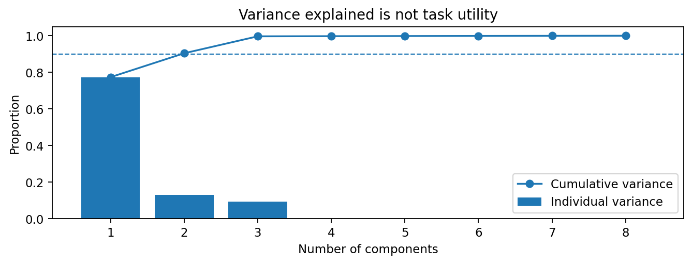
Fig. 53 شکل ۴ـ۱۳. نمودار مقدار ویژه و سهم واریانس تجمعی: افزایش بُعد دقت بازسازی را بیشتر میکند، اما کیفیت کشف الگو باید جداگانه آزموده شود.#
خطای بازسازی و قرارداد برازش#
برای \(W_k=[w_1,\dots,w_k]\)، مختصات و بازسازی بهترتیب:
وقتی از PCA در خط لوله استفاده میکنیم، میانگین، مقیاس و مؤلفهها باید روی آموزش برازش شوند. در تحلیل بدونناظر نیز اگر آزمون پایداری روی دادهٔ مستقل مد نظر است، همان قرارداد لازم است. علامت بردارهای ویژه ممکن است در اجرای دو پیادهسازی برعکس باشد؛ این اختلاف علامت، بهتنهایی تفاوت در زیرفضای PCA نیست.
۴ـ۱۶. SVD و تقریب کمرتبه: فشردهسازی ماتریس را با PCA ربط بدهیم#
در تجزیهٔ مقادیر تکین (SVD) هر ماتریس \(X\) را میتوان بهشکل زیر نمایش داد:
اگر فقط \(k\) مقدار تکین اول را نگه داریم، تقریب کمرتبهٔ \(X_k=U_k\operatorname{diag}(s_1,\ldots,s_k)V_k^\top\) حاصل میشود. قضیهٔ استاندارد تقریب کمرتبه میگوید این تقریب از نظر نرم فروبنیوس، در میان ماتریسهای با رتبهٔ حداکثر \(k\)، کمترین خطا را دارد. این نتیجه دربارهٔ خطای بازسازی همین ماتریس و همین نرم است، نه تضمین حفظ همهٔ الگوهای دادهکاوی.
مثال دستی:
مقادیر تکین ۲ و ۱ هستند. با نگهداشتن رتبهٔ یک:
برای دادهٔ مرکزشده، بردارهای راست SVD جهتهای PCA را میدهند و \(s_j^2/n\) متناظر مقدارهای ویژهٔ کوواریانس است. اگر مرکزکردن داده فراموش شود، SVD ماتریس خام لزوماً همان PCA نیست. در ماتریس تراکنش–قلم، بُعد کم میتواند وابستگیهای سبدی را خلاصه کند؛ ولی صفرهای واقعی و تنکی ممکن است باعث شوند تعبیر هر مؤلفه نیازمند احتیاط باشد.

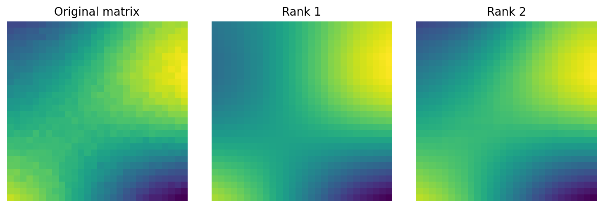
Fig. 54 شکل ۴ـ۱۴. ماتریس ساختگی و تقریبهای رتبهٔ یک و دو؛ هرچه رتبهٔ نگهداریشده بیشتر باشد، معمولاً جزئیات بیشتری بازسازی میشود.#
جایگاه فشردهسازی موجک و تبدیلهای ویژهٔ داده#
Han در بخش ۲٫۵٫۳ به فشردهسازی داده و تبدیل موجک نیز اشاره میکند. در دادهٔ زمانی یا تصویر، ضرایب موجک بزرگ میتوانند ساختارهای مهم را نگه دارند و برخی ضرایب کوچک را میتوان برای فشردهسازی کنار گذاشت؛ اما چنین نگاشتی با PCAِ روی جدول ویژگیها یکسان نیست. ازآنجاکه آموزش ریاضی تبدیل موجک در درس پردازش سیگنال و تصویر جداگانه انجام میشود، اینجا فقط نقش آن را بهعنوان بازنمایی فشردهٔ مناسبِ نوع داده یادآوری میکنیم، نه آنکه آموزش کامل موجک را تکرار کنیم.
۴ـ۱۷. فرافکنی تصادفی و روشهای غیرخطی: چه وعدهای واقعاً میدهند؟#
وقتی تعداد ویژگیها بسیار زیاد و تعداد مشاهدهها بزرگ است، گاهی بهجای محاسبهٔ دقیق جهتهای PCA از یک ماتریس تصادفی \(R\in\mathbb{R}^{p\times k}\) استفاده میکنیم:
در شرایط نظری مناسب، اگر \(k\) به اندازهٔ کافی بزرگ باشد، فاصلههای زوجیِ مجموعهٔ محدود نقاط با خطای نسبی کنترلشده حفظ میشوند؛ این ایده با نام Johnson–Lindenstrauss شناخته میشود. این روش پراکندگی بیشینه را مانند PCA یاد نمیگیرد؛ هدفش حفظ تقریبی هندسهٔ زوجی است. عدد \(k\) از تعداد نقاط، دقتِ مورد انتظار و احتمال شکست تأثیر میپذیرد، نه فقط از تعداد ستونهای اولیه.

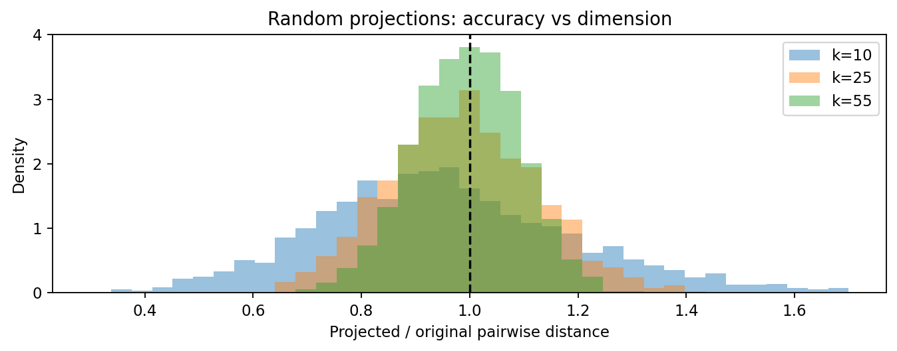
Fig. 55 شکل ۴ـ۱۵. نسبت فاصلهٔ زوجها پس از فرافکنی تصادفی به فاصلهٔ اولیه. در مثال ساختگی، ابعاد بیشتر پراکندگیِ نسبتها را کمتر میکنند؛ این یک مشاهدهٔ عددی است، نه اثبات تضمین عمومی.#
روشهای غیرخطی مانند نگاشتهای مبتنی بر همسایگی یا بازنماییهای مانيفولدی میتوانند خمیدگی داده را بهتر نمایش دهند؛ Han در ۲٫۶٫۳ دید کلی این خانواده را ارائه میکند. اما نمودار دوبعدی زیبا، الزاماً حفظ فاصلهٔ جهانی، قابلیت تعمیم یا ساختار خوشهٔ واقعی را تضمین نمیکند. اگر هدف «فقط دیداریسازی» باشد، معیارِ انتخاب متفاوت از هدف «خوراک الگوریتم کاوش الگو» خواهد بود. در این فصل وارد آموزش تفصیلی الگوریتمهای غیرخطی نمیشویم؛ آنها را در دستهبندی، با مفروضات و ملاحظات مهمشان جای میدهیم.
۴ـ۱۸. نفرین بُعد و انتخاب بازنمایی برای کشف الگو#
در فضای با بُعد زیاد، بعضی توزیعها باعث میشوند نسبت فاصلهٔ نزدیکترین و دورترین رکورد به هم نزدیک شود. این پدیده گاهی تمرکز فاصلهها نامیده میشود و میتواند برای روشهای وابسته به همسایه مشکل ایجاد کند. بااینحال این یک قاعدهٔ جهانشمول برای هر داده و هر متریک نیست؛ ساختار نهفته، تنکی و نوع توزیع میتوانند نتیجه را تغییر دهند.

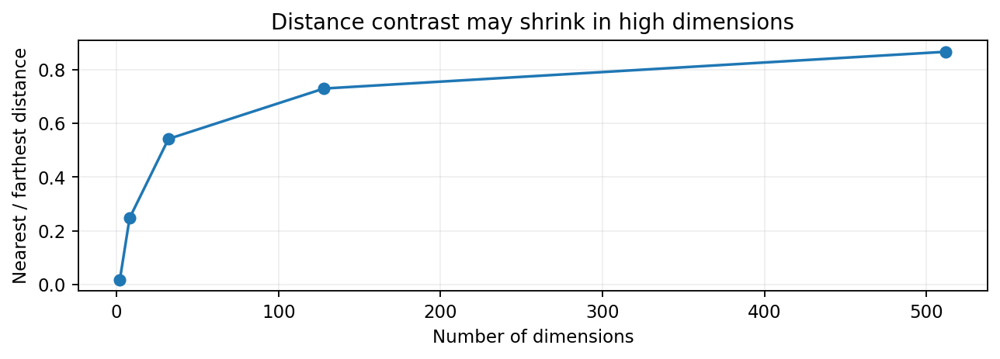
Fig. 56 شکل ۴ـ۱۶. یک مثال تصادفی از نزدیکشدن نسبت «فاصلهٔ نزدیکترین به دورترین» با رشد بُعد. برای دادهٔ ساختاریافته، نتیجه باید دوباره آزموده شود.#
تناقض کاربردی مهم: کاهش بُعد برای حفظ فاصلهٔ همسایگی مفید است، اما PCA بر اساس بیشینهکردن واریانس طراحی شده است و ممکن است همان همسایگی موردنیاز را تغییر دهد. بنابراین پس از هر فرافکنی، برای یک نمونهٔ کنترلشده باید مجموعهٔ همسایگان \(k\)تایی را قبل و بعد از تبدیل مقایسه کنیم. اگر \(N_k(x)\) همسایههای اولیه و \(\widetilde{N}_k(x)\) همسایههای تبدیلشده باشند، یک شاخص سادهٔ شباهت جاکارد است:
مقدار ۱ یعنی مجموعهٔ همسایهها ثابت ماندهاند؛ مقدار صفر یعنی هیچ اشتراکی ندارند. با وجود این، حتی Jaccard بالا تضمین نمیکند که فراوانی الگوهای انجمنی یا نتیجهٔ کشف ناهنجاری حفظ شده است. معیارِ ارزیابیِ تبدیلی باید متناسب با خروجی نهایی دادهکاوی تعریف شود.
۴ـ۱۹. آزمایشگاه جامع: از تراکنش ساختگی تا دادهٔ آمادهٔ کشف#
در فایل transactions_synthetic.csv، دادهٔ ۳۲۰ سفارشِ ساختگی قرار دارد. ویژگیهای اصلی شامل day، city، category، units، visits30، discount_pct و spend هستند. شناسهٔ transaction_id کلید است و نباید بدون دلیل بهعنوان یک مختصات عددی وارد PCA شود. ستون rare_event فقط برای کنترلِ وجود یک گروه نادر تولید شده و وارد فرافکنی مثال نمیشود.
مراحل آزمایش پیشنهادی:
پرسش: آیا بعد از خلاصهسازی یا نمونهگیری، رکوردهای نادر هنوز قابل مشاهدهاند؟ آیا ساختار نزدیکترین همسایگان حفظ میشود؟
واحد مشاهده: هر سطر یک تراکنش است؛ تجمیع روزانه را جداگانه ایجاد کنید و با تراکنشها اشتباه نگیرید.
کنترل سادهٔ نمونه: از ۳۲۰ رکورد، نمونهٔ بدون جایگذاری ۵۰تایی بگیرید و حضور
rare_eventرا با جمعیت کامل مقایسه کنید. نتیجه به seed وابسته است و دادهٔ واقعی نیست.برش آموزش/آزمون: برای مثال محاسباتی، ۲۴۰ سطر نخست را بهعنوان دادهٔ برازش و ۸۰ سطر دیگر را بهعنوان دادهٔ تبدیل کنار بگذارید؛ این تقسیم تنها برای نشاندادن قرارداد کد است و در دادهٔ زمانیِ واقعی باید ترتیب و وابستگی گروهی نیز لحاظ شود.
برازش تبدیل: Z-score را فقط روی آموزشِ ویژگیهای
spend, units, visits30, discount_pctبرازش کنید. سپس همان پارامترها را روی ۸۰ سطر دیگر اعمال کنید.کاهش بُعد: PCA دو مؤلفهای را فقط روی دادهٔ استانداردشدهٔ آموزش برازش کنید؛ مختصات آزمون را با همان مؤلفهها بهدست آورید.
ممیزی: نسبت واریانس حفظشده، خطای بازسازیِ آزمون و شباهت همسایهها را گزارش کنید؛ عدد خوبِ یکی از این شاخصها جایگزین دیگری نیست.

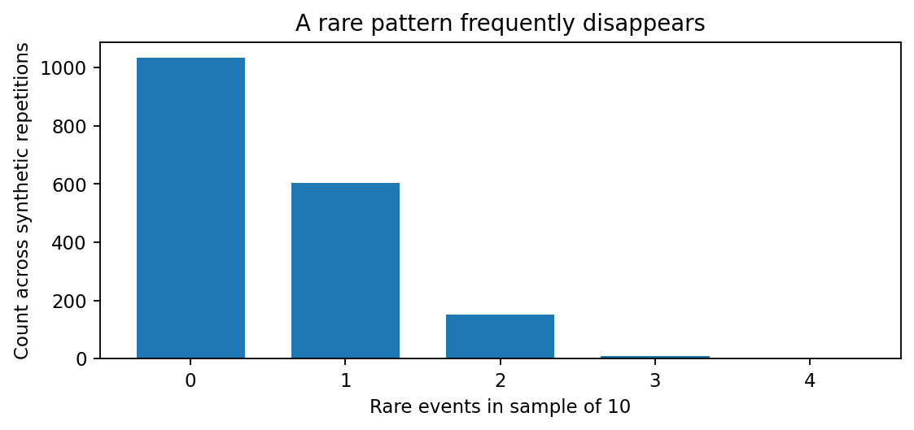
Fig. 57 شکل ۴ـ۱۷. تعداد رخدادهای نادر در نمونههای دهتاییِ تکراری؛ بخش بزرگی از نمونهها هیچ نمونهای از گروه نادر ندارند. داده و تکرارها ساختگیاند.#

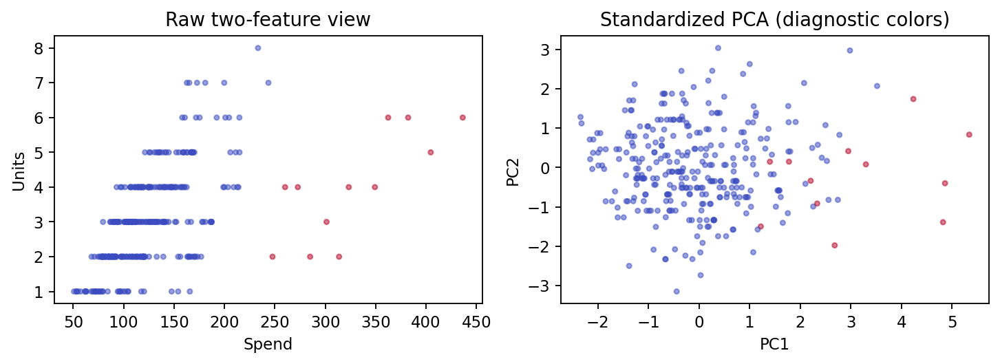
Fig. 58 شکل ۴ـ۱۸. نمایش دو ویژگی خام در برابر دو مؤلفهٔ PCA استانداردشده؛ رنگ صرفاً نشانگر برچسب ساختگیِ آزمایشی است و در برازش PCA استفاده نشده است.#
نحوهٔ اجرای کد و تفسیر خروجی#
پس از نصب وابستگیها (numpy, pandas و برای شکلها matplotlib)، فایل chapter04_examples.py را اجرا کنید. این فایل تابعهای مستقلی برای نمونهگیری تصادفی، نمونهگیری طبقهایِ وزندار، مخزن جریانی، Min–Max، Z-score، مقیاسبندی مقاوم، One-hot، PCA، SVD و سنجش همسایگی دارد. Notebook همان تمرین را گامبهگام اجرا میکند و کد آزمون test_chapter04_examples.py صحت چند حالت دستی و چند قرارداد را کنترل میکند.
نمونهای از نتیجهٔ همین دادهٔ ساختگی با بذر ثابت: از ۳۲۰ تراکنش، ۱۲ رخداد نادر در جمعیت کامل و صفر رخداد نادر در نمونهٔ تصادفی ۵۰تاییِ انتخابشده با seed مشخص وجود دارد. این دقیقاً نشان میدهد که حتی نمونهٔ نسبتاً بزرگ هم ممکن است نوع خاصی از پدیده را حذف کند؛ نتیجه از seed و سازوکار ساخت داده اثر میپذیرد و نباید به جامعهٔ واقعی تعمیم داده شود. مقدار واریانسِ دو مؤلفهٔ PCA برای همین مثال تقریباً ۰٫۶۷۱ و خطای بازسازی آزمون حدود ۰٫۳۵۲ است؛ این اعداد بدون مقایسه با هدف نهایی، معیار «موفقیت علمی» نیستند.
پروتکل پیشنهادی برای دفاع علمی از پیشپردازش#
قبل از اجرا بنویسید هدف کشف چیست، واحد مشاهده کدام است، کدام گروه یا پدیده ممکن است نادر باشد و چرا یک تبدیلی انتخاب شده است. در زمان اجرا بذر تصادفی، محل تقسیم داده، آمارههای برازش و نسخهٔ وابستگیها را ثبت کنید. پس از اجرا هزینهٔ محاسباتی، میزان کاهش حجم، تغییر توزیع گروهها، سهم واریانس، خطای بازسازی، حفظ همسایگی و پایداری الگوهای کشفشده را در یک جدول کنار هم گزارش دهید. برای هر مقایسه، تنها یک عامل را تغییر دهید؛ در غیر این صورت روشن نیست بهبود یا تخریب از کجا آمده است.
۴ـ۲۰. خطاهای رایج و آزمونهای تشخیصی#
ادعا یا عمل اشتباه |
چرا نامعتبر است؟ |
آزمون اصلاحی |
|---|---|---|
«۱۰٪ همهٔ دادهها همیشه کافی است» |
برای گروههای نادر احتمال حذف بالا است |
نمودار پایداریِ اندازهٔ نمونه و نرخ پوشش گروهها |
«تجمیع، فقط سطرها را کم میکند» |
معنای واحد مشاهده تغییر میکند |
تعریف کلید و مخرج هر شاخص قبل/بعد |
«استانداردسازی هیچ تغییری در فاصله نمیدهد» |
وزن ضمنی محورهای عددی عوض میشود |
همسایهها پیش/پس از تبدیل |
«One-hot فاصلهٔ جغرافیایی میسازد» |
فاصلهٔ ردههای اسمی را مساوی میبیند |
مقایسه با معنای واقعی متغیر |
«۹۵٪ واریانس یعنی ۹۵٪ اطلاعات مفید» |
PCA برای واریانس بهینه است، نه هر مأموریت کشف |
معیار اختصاصی الگو و رخداد نادر |
«برازش Scaler قبل از Split اشکالی ندارد» |
دادهٔ آزمون وارد برازش شده است |
بازاجرای Pipeline با fit فقط روی آموزش |
«نمودار دوبعدی زیبا یعنی خوشهٔ واقعی» |
نمایش، تضمین ساختار جهانی نیست |
پایداری، حساسیت به seed و مقایسهٔ فضای اصلی |
«همان دستهٔ ردههای آموزش برای همهٔ آینده کافی است» |
ردهٔ ناشناخته ممکن است رخ دهد |
سناریوی آزمون برای unseen category |
۴ـ۲۱. تمرینهای پایانی و فعالیت کلاسی#
تمرینهای مفهومی
۱. «کاهش تعداد تراکنشها» و «تبدیل تراکنشها به فروش ماهانه» را با یک مثال مقایسه کنید. کدام یک برای قواعد انجمنی مناسبتر است و چرا؟
۲. در چه شرایطی تجمیع به سطح روز میتواند کشف ناهنجاری را بهتر کند، و در چه شرایطی آن را نابود میکند؟ پاسخ را با واحد مشاهده و نوع ناهنجاری توجیه کنید.
۳. تفاوت طبقه و خوشه در نمونهگیری را با مثال فروشگاه و مشتری توضیح دهید. کدام طرح برای اطمینان از حضور شهر کمجمعیت مناسبتر است؟
۴. چرا استانداردسازی هر ستون با نرمالسازی \(L_2\) هر رکورد یک کار واحد نیست؟ اثر هر کدام روی هندسه را بیان کنید.
۵. آیا One-hot برای هر ستون و هر الگوریتم بهترین راه است؟ یک مسئلهٔ پُررده و پرتنک را تحلیل کنید.
۶. چرا «همبستگی نزدیک یک» لزوماً مجوز حذف فوری یکی از دو ویژگی نیست؟ نقش missingness و معنا را توضیح دهید.
۷. چه تفاوتی بین بیشینهکردن واریانس در PCA و حفظ فاصلهها در فرافکنی تصادفی وجود دارد؟
تمرینهای محاسباتی
۸. برای جامعهٔ ۵۰۰تایی با ۱۰ رخداد نادر، احتمال حذف همهٔ رخدادها در نمونهٔ بدون جایگذاریِ ۲۰تایی را با ترکیبها محاسبه کنید. با تقریبِ با جایگذاری مقایسه کنید.
۹. دو طبقه با سهمهای واقعی ۷۵٪ و ۲۵٪ و میانگینهای ۱۲ و ۶۰ داریم. اگر از هر طبقه ۱۵ مشاهده برداریم، میانگین بیوزن نمونه و برآورد طبقهایِ درست را محاسبه کنید.
۱۰. برای دادههای ۱۰، ۲۰ و ۳۰، مقدار استانداردشدهٔ ۴۰ را بر پایهٔ آمارههای همان سه مقدار بهدست آورید؛ سپس توضیح دهید چرا نباید دادهٔ آزمون را دوباره fit کرد.
۱۱. دادههای ۱، ۲، ۳، ۴، ۲۰ و ۲۱ را در سه بازهٔ همعرض و سه گروه تقریباً همفراوانی تقسیم کنید. کدام روش برای شناسایی مقادیر بالای ۲۰ مناسبتر است؟
۱۲. برای چهار نقطهٔ \((-2,-1),(-1,-0.5),(1,0.5),(2,1)\)، کوواریانس با مخرج \(n\)، مقدار ویژهٔ غالب و جهت PCA را محاسبه کنید.
۱۳. برای ماتریس قطری با قطر ۴، ۳ و ۱، خطای فروبنیوسِ مربعِ تقریب رتبهٔ ۱ و ۲ را محاسبه کنید و سهم انرژی را با جمع مربع مقادیر تکین مقایسه کنید.
۱۴. نشان دهید چرا ضریب \(1/n\) بهجای \(1/(n-1)\) در کوواریانسِ دادهٔ کاملِ غیرتبهگن، جهت مؤلفههای PCA را تغییر نمیدهد.
تمرینهای برنامهنویسی و پژوهشی
۱۵. Notebook را با اندازهٔ نمونههای ۲۰، ۵۰، ۱۰۰ و ۲۰۰ بار اجرا کنید؛ درصد تکرارهایی را گزارش کنید که هیچ رخداد نادری ندارند. تکرارها را مستقل و با بذرهای ثبتشده انجام دهید.
۱۶. نمونهگیری طبقهای از city را با نمونهگیری تصادفی ساده مقایسه کنید؛ برای تخمین میانگین جامعه از وزنهای درست استفاده کنید و نشان دهید چه زمانی میانگین سادهٔ نمونه سوگیر میشود.
۱۷. برای ویژگی spend، سه مقیاسبندی Min–Max، Z-score و مقاوم را روی آموزش برازش کنید. حضور یک مقدار دورافتاده را بررسی و پراکندگی را ترسیم کنید.
۱۸. پنج بُعد متفاوت برای PCA را روی دادهٔ بسطیافته با ویژگیهای نویزی مقایسه کنید؛ خطای بازسازی و Jaccard همسایهها را در مقابل تعداد مؤلفه رسم کنید. تفسیر کنید چرا بهترین تعداد مؤلفه برای این دو معیار میتواند متفاوت باشد.
۱۹. یک ویژگی ساختگیِ بسیار کمواریانس ولی کاملاً مرتبط با رخداد نادر بسازید. نشان دهید چرا Filter مبتنی بر واریانس میتواند آن را حذف کند و چگونه باید اعتبار کشفِ رخداد نادر را مستقل سنجید.
۲۰. برای مسئلهٔ استخراج قواعد انجمنی از سبدهای خرید، دو گسستهسازی متفاوت از «مبلغ» را آزمون کنید. تغییر در تعداد اقلام پرتکرار و حساسیت به آستانهٔ پشتیبانی را گزارش کنید. از تحلیل نتایج روی همان داده برای نتیجهگیری قطعی فراتر از نمونه خودداری کنید.
فعالیت کلاسیِ پیشنهادی (۵۰ تا ۷۰ دقیقه)#
دانشجویان در گروههای کوچک یک پرسش کاوشی را انتخاب میکنند؛ گروه اول «الگوی خرید همزمان»، گروه دوم «شناسایی خریدهای نادر» و گروه سوم «ساخت خوشههای رفتاری». همه یک دادهٔ یکسان میگیرند اما باید مستقلاً پیشنهاد دهند که تجمیع، نمونهگیری، تبدیل و کاهش بُعد برای هدف خود چگونه انجام شود. هر گروه بهجای ارائهٔ صرفاً نمودار، باید هزینهٔ اطلاعاتیِ تصمیمها و حدّ اعتبار نتیجه را گزارش کند. سپس گروهها نشان میدهند چرا نسخهٔ «پیشپردازش عمومی و یکسان برای همهٔ مسائل» قابل دفاع نیست.
۴ـ۲۲. جمعبندی و پیوند با فصل پنجم#
پیشپردازش نه «پاککردن چند ستون» بلکه تعریف دیدگاهی از داده است. نمونهگیری تعیین میکند چه رکوردهایی دیده شوند؛ تجمیع مشخص میکند چه پدیدهای اصلاً رکورد تلقی شود؛ تبدیل مقیاس هندسه را تغییر میدهد؛ گسستهسازی و One-hot واژگانِ الگوهای بعدی را میسازند؛ انتخاب ویژگی بعضی پرسشها را حذف میکند؛ و PCA/SVD بازنمایی را در ابعاد کمتر خلاصه میکنند. هیچیک بدون سؤال علمی، تعریف مخرج، قرارداد برازش و ارزیابی پایداری قابل دفاع نیست.
پل به فصل بعد: در فصل پنجم به کشف الگوهای پرتکرار و قواعد انجمنی میپردازیم. در آنجا پشتیبانی، اطمینان و سنجههای جالببودن الگو را محاسبه خواهیم کرد. اکنون میدانیم چرا نوع سبد، مرز گسستهسازی، طرح نمونه و حذف رکورد تکراری میتوانند فراوانی همان الگوها را تغییر دهند. بنابراین نتایج فصل پنجم از قرارداد دادهای همین فصل شروع میشوند، نه صرفاً از اجرای الگوریتم Apriori یا FP-Growth.
منابع#
۱. Han, J., Pei, J., & Tong, H. Data Mining: Concepts and Techniques, 4th ed., Elsevier، فصل ۲: بخش ۲٫۴ Data quality, data cleaning, and data integration (صص. ۵۵–۶۳)، بخش ۲٫۵ Data transformation (صص. ۶۳–۷۱) و بخش ۲٫۶ Dimensionality reduction (صص. ۷۱–۷۹). مباحث جمعبندیشده متناسب با هدف درساند؛ شکلها و مثالهای این جزوه بازتولید تصاویر کتاب نیستند.
۲. Tan, P.-N., Steinbach, M., Karpatne, A., & Kumar, V. Introduction to Data Mining, 2nd ed., Pearson، فصل ۲، بخش ۲٫۳ Data Preprocessing (صص. ۵۰–۷۱)، زیربخشهای ۲٫۳٫۱ تا ۲٫۳٫۷؛ شامل Aggregation، Sampling، Dimensionality Reduction، Feature Subset Selection، Feature Creation، Discretization and Binarization و Variable Transformation.
۳. بسطهای آموزشی این جزوه: تمایز «برازش فقط روی آموزش»، پروتکل سنجش حفظ همسایگی، تصویرسازیِ حساسیت به بذر، دادهٔ ساختگی و مثالهای فرمولبندیِ خطا و نشتی، برای اتصال مبانی کتابها به کار عملی و ارزیابی بازتولیدپذیر تهیه شدهاند؛ این موارد بهعنوان نقلِ مستقیم یا محتوای انحصاری دو کتاب معرفی نشدهاند.